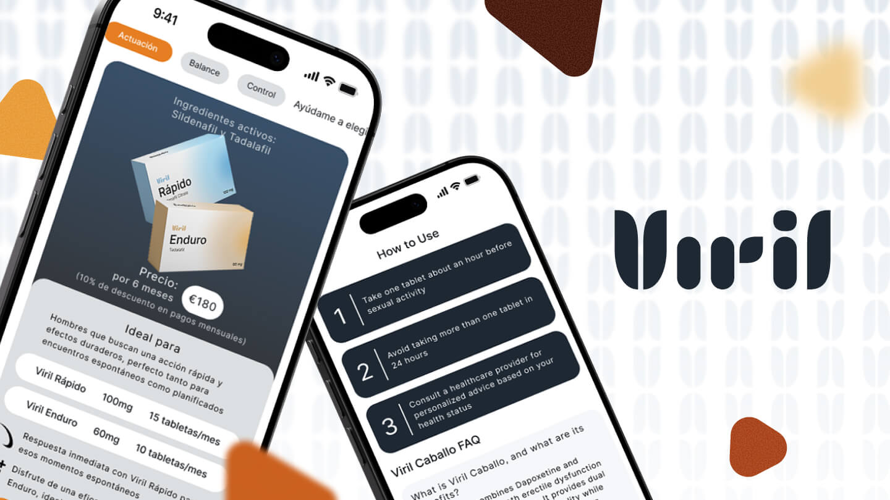
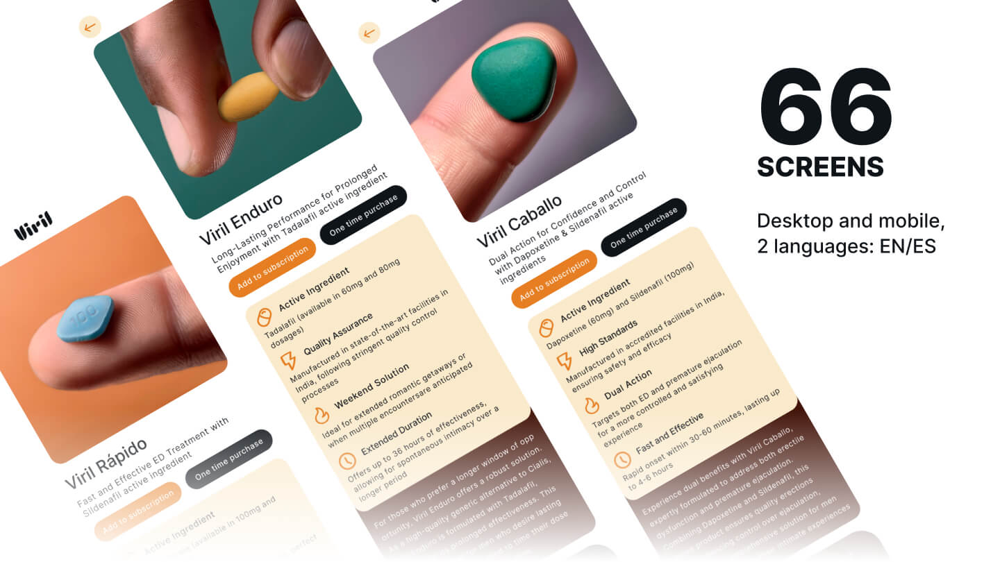
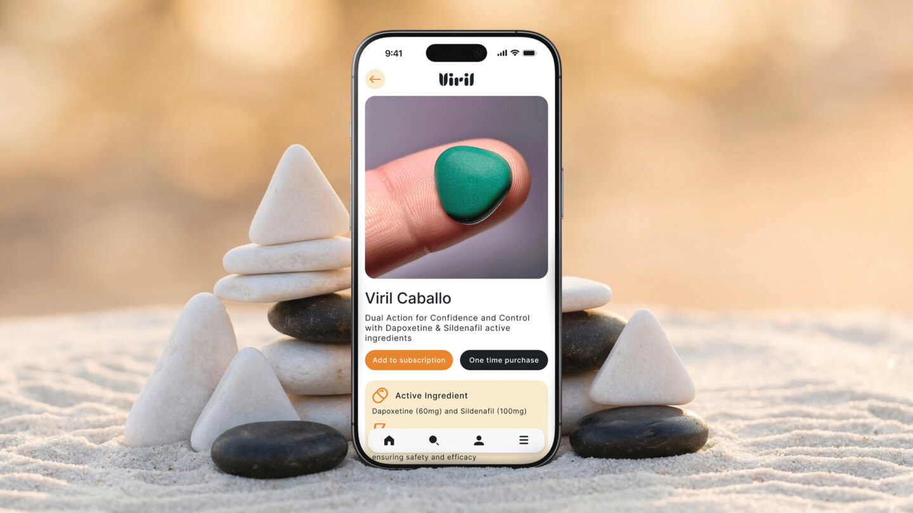
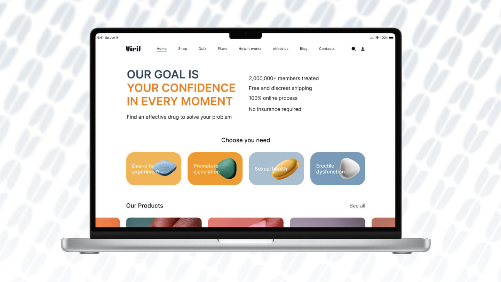
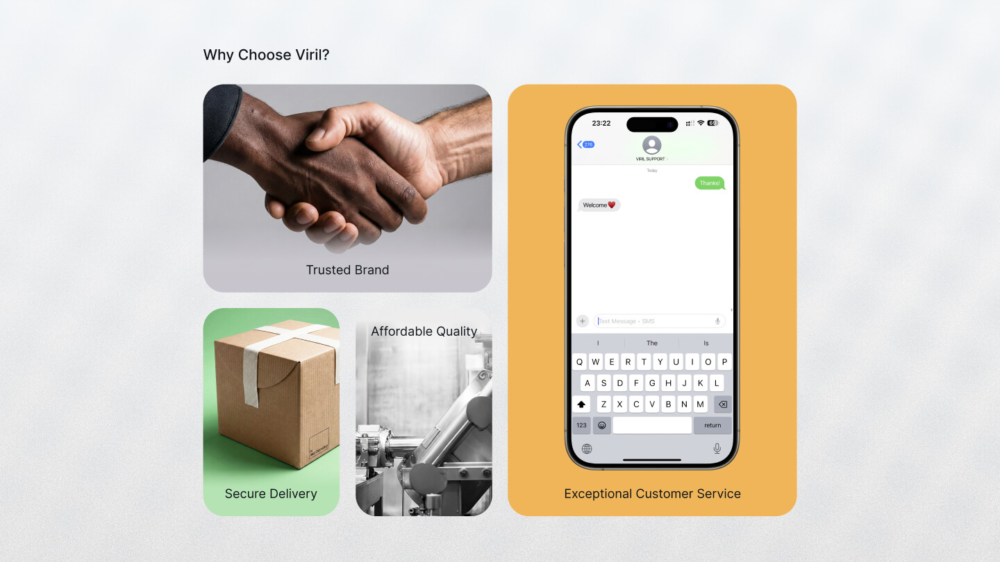

Viril
A men's health brand for the European market — built from a blank page in five weeks. The core product challenge wasn't visual: it was how to guide a user who doesn't know what he needs toward the right product without losing his trust along the way.
Why
The client came with a product — male potency supplements for the European market — and no brand around it. The niche has a clear failure pattern: brands either go clinical and cold, or they go tabloid and cheap. Neither builds the trust required for a purchase this personal. I looked at every major player — Hims, Roman, and their European equivalents — mapping what worked, what broke trust, and why. The core user problem was informational: most men don't know which product addresses their specific situation. That gap needed a product solution, not just a homepage.
What
I ran the full cycle solo: competitive analysis → positioning strategy → naming → brand voice → visual system → UX architecture → UI in Figma. The centrepiece was a recommendation quiz — a guided flow that takes a user from "I'm not sure what I need" to a specific product, without requiring him to self-diagnose. Beyond the quiz: 64 screens across four versions (EN/ES, desktop/mobile), covering the full user journey from first landing to post-purchase. Naming, brand platform, and every screen — owned end to end.
How
Competitive analysis came first. I documented what each major brand did at every step of the user journey — entry point, trust signals, product presentation, checkout friction. That became the filter for every design decision: if something was already broken in the market, I wasn't going to repeat it. The quiz architecture required working backwards from the product logic — understanding what variables actually differentiate the right choice, then designing a question flow that surfaces those without feeling clinical. UX revisions from the client were minimal and none touched the core flows — the architecture held. The project launched and is live today.
What it looks like





What we delivered
Full product: 16 screens × EN/ES × desktop/mobile
Research → strategy → naming → brand → UX → UI
Users don't know what they need — the quiz solves that before the product page does
Architecture approved first pass — visual edits only
The design was implemented and the product is live. The gap between the Figma file and the final site — built on WordPress rather than custom code — is visible. The original design required a level of precision that a template-based build couldn't fully replicate. That's a common handoff problem in the industry. The UX decisions, the flows, and the product logic transferred intact.
Starting from zero?
A blank page is where I do my best work. Tell me about the product.
Get in touch